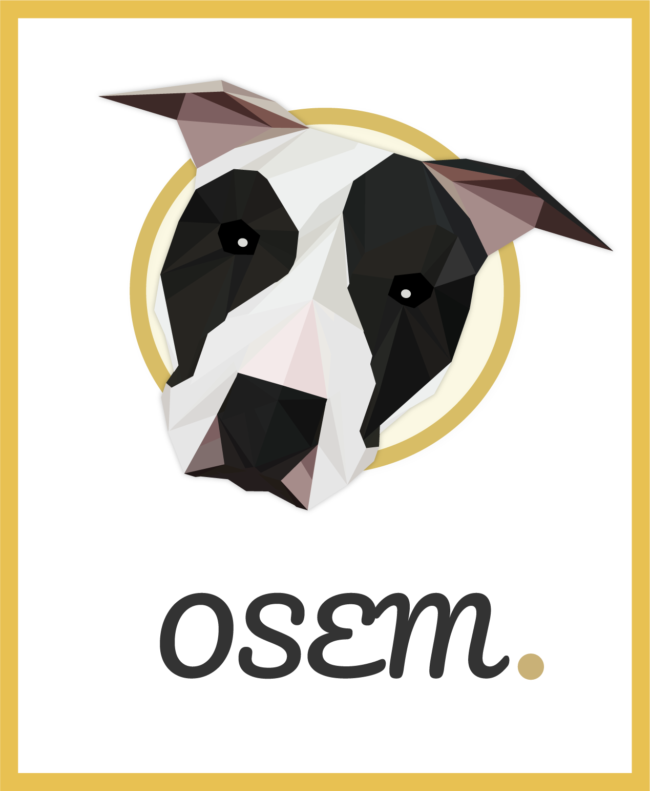

עמוד הבית
אודות
Curriculum Vitae
Portfolio
פורטרט עצמי
גוטיקה ישראלית
גאון יציב
דברו אליי
גוטיקה ישראלית
פרוייקט מסכם בקורסים מבוא לתקשורת חזותית ומבוא לעיצוב גרפי
מה עומד מאחורי העבודה?
פרשנות עכשווית ליצירה American Gothic. ישראל 2018
סרטון הסבר על הקונספט, המקור ותהליך העבודה
פורטרט עצמי
גאון יציב